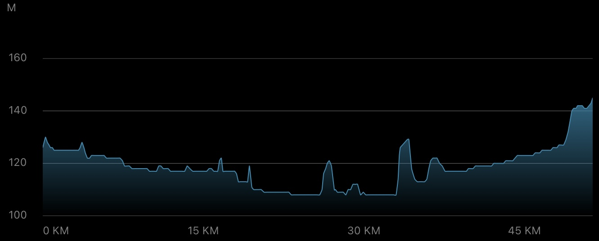
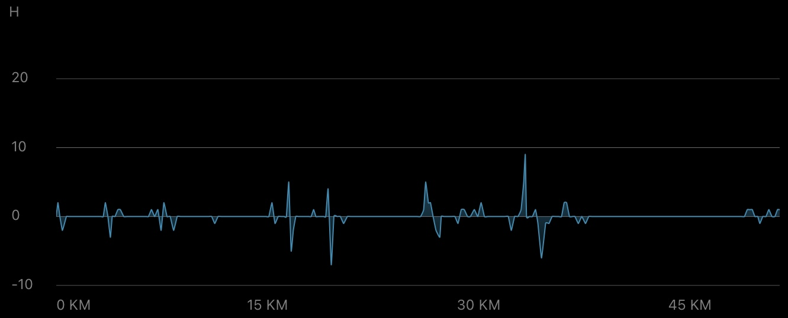
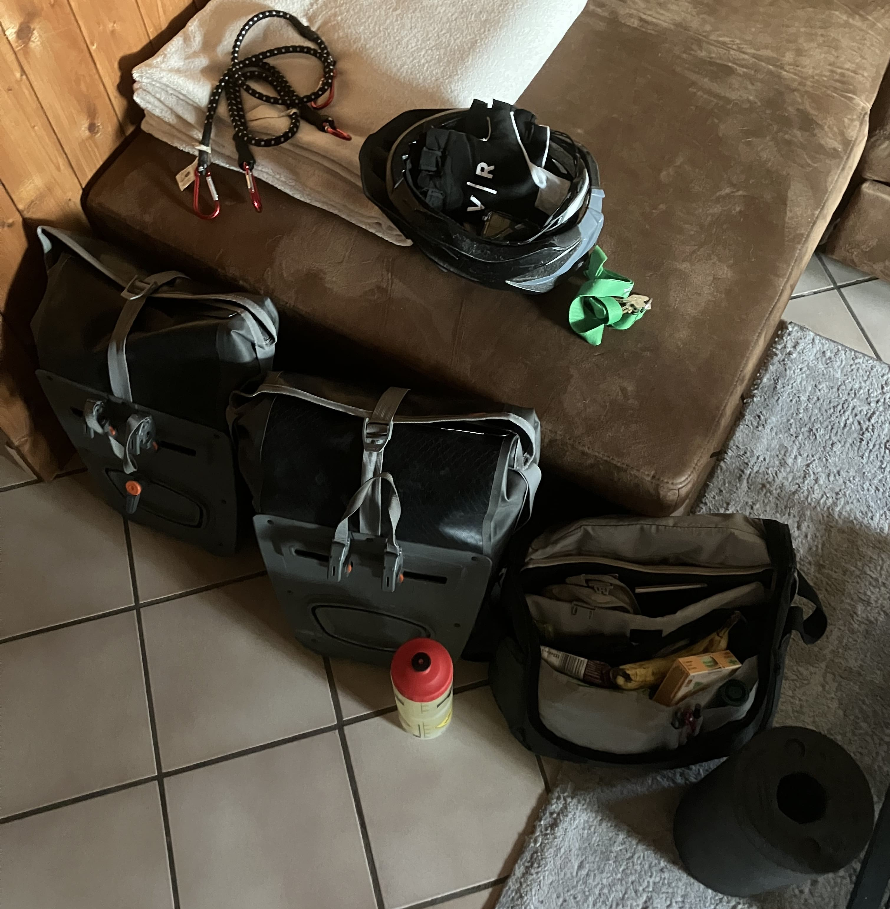
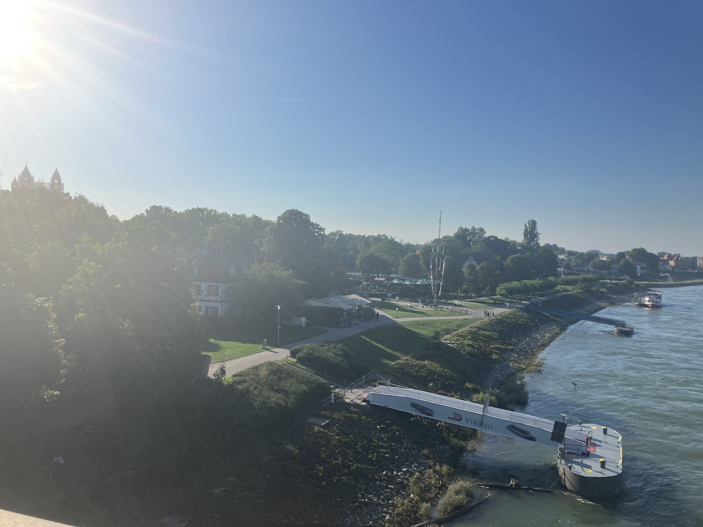
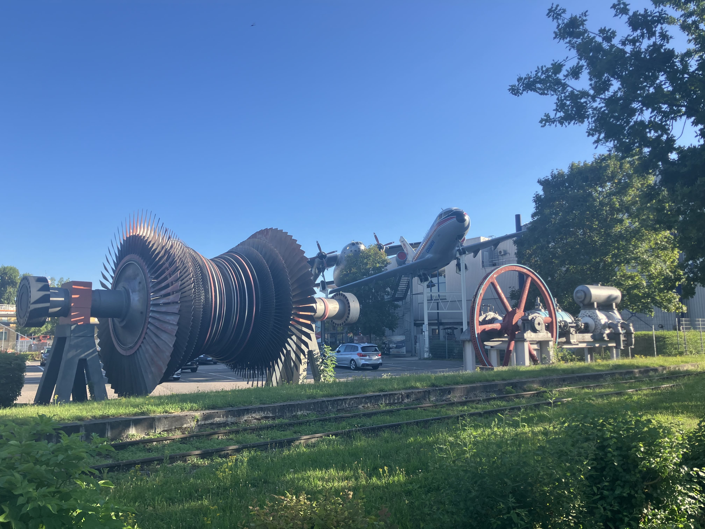

Daily Stats*
| Distance |
51.37 km |
| Time |
2:23:37 h |
| Avg. Speed |
21.46 km/h |
| Max. Speed |
34.6 km/h |
| Avg. Heart Rate |
151 bpm |
| Uphill |
156 m |
| Downhill |
141 m |
| Avg. Temperature** |
32.0 °C |

Elevation profile [m]

Slope profile [%]
*measured by Garmin Forerunner 945 & Sigma ROX 4.0
**measured at the lower back
Daybook
Today I started this year's cycling tour through Germany, the Netherlands, and Belgium — a challenging >1500 km and >11 km uphill journey. The first leg was planned as a relaxed warm-up on a mostly flat track from Heidelberg to Hochstadt (Palatinate). I had driven the route recently, which meant that the time and speed of the ride were quite predictable.
In the morning, I made final preparations on the bike and left my apartment with about 16 kg of luggage on the rack. For a three week tour, this seems like a tolerable extra weight, but you definitely feel it when you're going uphill ...
However, the training I had done over the past weeks paid off, and I was able to maintain a roughly constant speed of over 20 km/h. From Heidelberg, I headed southwest past Kirchheim, across countryside and small woodlands to Hockenheim. The roar of the engines was clearly audible when passing the Hockenheimring (a well-known motorsport race track), but quickly subsided as I left the town hall and some residential areas behind. Just 15 min later I already reached Speyer, crossing the beautiful "Salierbrücke" with a nice view over the Rhine and the cathedral (a UNESCO World Heritage Site) within sight.
The scorching sun made it difficult with temperatures around 30°C, but at least I was already halfway there at that point. Via Römerberg, Lingenfeld and Lustadt I pedaled my way up the final climb from Zeiskam to Hochstadt (Palatinate).
Overall, this first leg wasn't as relaxed as expected due to the heat, but I feel like I have what the pros call "good legs". Let's see what the next day brings ;-)
Impressions

My full luggage for the tour

Rhine riverbank view from the "Salierbrücke" near Speyer

Exhibits in front of the "Technik Museum Speyer"